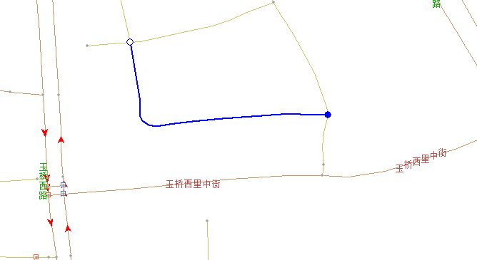


选中线

编辑LINK
右侧属性栏展示

属性编辑
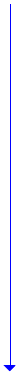
link的选中及显示：
1、鼠标左键点击map界面时自动进入选择模式
2、map界面中左键选中LINK；
3、map界面高亮选中LINK；
4、当前对象列出选中LINK类型及ID
5、属性栏列出选中LINK的属性卡片
取消当前LINK的选中：
1、点中其他Link/点/icon/面时，切换至其他要素
2、按键盘的“Esc”键，退出当前LINK的选择
当前对象
道路线:123456
对象内要素关联维护
保存
在线检查
说明：
1、当前编辑属性值发生变更时，
自动维护关联属性字段的值
2、属性栏显示字段值同步显示在
对应属性栏中
说明：
1、点击保存时，按照当前属性栏结果更新当前数据并释放
2、根据业务逻辑，维护对象外属性变更信息
实时控制
说明：
1、业务不制作的属性值域在属性选择菜单不展示，不允许选择；
2、修改时，如不满足特定条件，给出对应提示信息；
说明：
1、保存后，自动执行对应的在线检查；

车道数
车道等级
1条车道
道路种别
城市高速
上下线分离
IMI代码
其他道路
等级5
功能等级
类型描述
基础属性
限制信息
道路名（共n条）
普通限速
常用属性

顾家庄桥
123456
匝道/I C
操作说明：
1、点击属性栏各属性时触发编辑进入详细编辑；
LINK属性展示：
1、LINK属性栏按照卡片展示，每张卡片在属性栏展示主要信息；
2、属性栏上通过颜色区分限制信息，行人导航，实时交通卡片是否有值；
3、发生变化的属性栏在保存之前通过颜色与其他属性进行区分；
4、点击卡片名称时，属性栏切换至对应卡片展示；
5、link表中对应的属性字段，如不需编辑，在其他属性卡片中只做显示；
总
左
右

+

条件限速（共0条）
+
道路方向
顺方向
取消
说明：
1、点击取消时，恢复当前属性栏结果为选中时状态
形状编辑
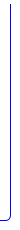
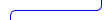
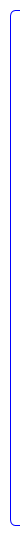
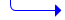
行人导航
实时交通
区域属性
其他属性
生成数据

说明：
1、 点击属性栏下方保存按钮；
编辑
操作说明：
1、通过详细属性编辑按钮完成对应属性的修改
①点击选择Link按钮；
②地图中鼠标点选link；

平滑修行

移动端点

操作说明：
1、移动Link的端点，将其拖出原位置；
2、移动端点过程中，默认开启线捕捉，可将link端点挂接捕捉至另一根LINK上，
3、点击空格完成操作
4、系统记录下Link的最新的几何形状，并高亮显示
取消动作：
1、按Esc撤销本次分离节点的操作
参与变化的要素为两根RDLink，有且仅有两个RDLink，分别表示为RDLink1、RDLink2；
移动一个RDLink1的一个端点RDNode2（此端点有且仅有一根RDLink挂接），使其挂接到第二个RDLink2上，并且将其打断；
被移动的RDNode2，几何发生变化，但是Pid不变；

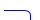
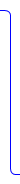
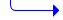
业务说明：
分离节点过程中对关系维护如下：
1) 线点线关系
a) 对inLink及NodeB进行端点分离，那么车信、交限、分歧、大门、收费站、分叉提示、顺行、语音引导、详细车道连通关系（9类）均应同时被删除；
b) 对inLink及NodeA进行端点分离，9类信息保持不变；
c) 对outLink及NodeE进行端点分离，9类关系保持不变；
d) 对outLink及NodeD进行端点分离，那么车信、交限、语音引导、分歧、大门、收费站、分叉口提示、顺行、详细车道连通关系，分离link后将关系信息删除。
分离节点
操作说明：
1、移动Link的端点，将其从挂接处移出，形成新的端点；
2、点击空格完成操作
3、系统记录下Link的最新的几何形状，并高亮显示
取消动作：
1、按Esc撤销本次分离节点的操作
RDLink1、RDLink2, RDLink3具有相同的端点Node2
移动的Link1，几何发生变化，生成新的端点N5，但是Pid不变；


实时控制：
1、 形状点和形状点不能重合
2、 该Node点已经被做成同一点，不能再移动该Node点
3、对组成路口的node挂接的link线进行编辑操作时，不能分离组成路口的node点；
4、该线是经过线，移动该线造成线线关系（车信、线线交限、线线语音引导、线线分歧、线线顺行）从inLink到outlink的不连续
5、不允许移动形状点到角点处
6、不允许去除有立交关系的形状点
7、相邻形状点不可过近，不能小于2m
8、不能打断过短的link
9、该link的端点已经作为了同一点，不能再用该端点进行合并点操作
10、如果link上的node已经参与制作了CRFI，则不允许对此node进行修形操作
11、创建或修改link，节点不能到已有的立交点处，请先删除立交关系
12、点限速点位不能在图框线上
13、电子眼点位不能在图框线上
14、该点是图廓点，只能在图廓线上
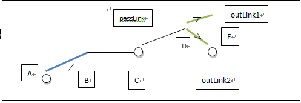
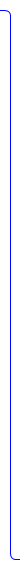
删除形状点
操作说明：
1、选择删除按钮，
2、选中该Link上的形状点，系统对比显示删除前后的Link
3、按快捷键完成操作
4、系统记录下Link的最新的几何形状，并高亮显示
取消动作
1、撤销本次删除形状点的操作，按Esc撤销上次移动的操作
2、点击其他编辑按钮，切换至对应编辑动作
实时控制：
1、 节点形状点不允许删除（前台）
2、 不允许去除有立交关系的形状点（后台）
3、 点限速点位不能在图框线上（后台）
4、 电子眼点位不能在图框线上（后台）
5、 不能生成过短的link（后台）

业务说明：
1、删除一个形状点后，系统会自动捕捉下一个临近的形状点，在视图窗口上点击左键，按下空格键，就会删除被捕捉的形状点；
2、RD_LINK表中的“左区划号码”、“右区划号码”：程序自动赋值，不允许手工编辑;
3、对Link的任意形状点删除后，关系的维护：
a) 引导关系维护：原引导LinkID为当前Link的POI、点门牌、地名索引的引导Link、公共交通的引导Link，将保持引导LinkID不变，引导坐标将重新计算；计算原则同插入形状点；side值保持不变；
b) 所属关系维护：原所属Link为当前Link的点门牌的所属Link，将保持不变；
c) 关联关系维护：
原关联Link为当前Link的出入口索引、收费站索引的关联Link，将保持不变；
点限速维护原则：关联link保持不变，同时将点限速显示坐标移动到关联link上离原点位最近的位置；
电子眼维护原则：关联link保持不变，同时将电子眼显示坐标移动到关联link上离原点位最近的位置；
d) 同一关系维护：如果此RDLink为主要素，则与当前Link具有同一线的Link也做相应操作（分离节点除外）；如果此RDLink不为主要素，则不允许修形；
e) 立交关系维护：删除的形状点在起点和立交之间，立交形状点号改变；删除的形状点在立交和终点之间，立交形状点号不变；删除立交形状点，不允许删除；
f) 既有立交关系又有同一关系的维护：删除的形状点在起点和立交之间，立交形状点号改变；删除的形状点在立交和终点之间，立交形状点号不变，同时，同一线上除道路要素之外的其他要素的形状点同步删除；删除立交形状点，不允许删除；
g) 与ADAS的关联关系：保持不变；
h) 对邮编索引的维护：side值重新计算；
i) 当删除点，道路LINK形状改变时，程序将不维护与道路LINK相关联的行政区划的位置关系；
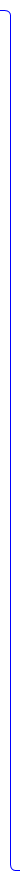
打断LINK

操作说明：
1、选择打断按钮，
2、指定定线上位置；
3、按快捷键完成操作
4、系统自动将当前LINK在选择处分割成两根LINK，并在打断出生成新的NODE点
5、属性栏展示打断后两根link的信息
实时控制：
1、节点形状点不允许删除（前台）
2、点限速点位不能在图框线上（后检查）
3、电子眼点位不能在图框线上（暂不实现）
4、不能打断过短的link（暂不实现）
5、路口组成link不允许打断（后台）
业务说明：
1） 几何处理规则：
a) 打断后，原始LINK1删除；创建两条新的LINK（LINK2，LINK3）。即LINK2保留从NODE1到NODE3之间的几何；LINK3保留从NODE2到NODE3之间的几何；若原link包含在某CRFI中，则新生成的LINK（LINK2，LINK3）加入到CRFI组成link中，新生成的NODE（NODE3）的加入到CRFI组成的node中。
2） 属性处理规则：
a) LINK2和LINK3都默认继承LINK1的属性。
b) 例外：如果是因为与行政区划线ADLink、ZONE线ZoneLink、土地利用线LULink的交点处打断，则需要更新左右行政区划、左右乡镇属性。（批处理实现）RD_LINK表中的“左区划号码”、“右区划号码”：程序自动赋值，不允许手工编辑，赋值原则详见高级-给link赋adminID
3） 子要素维护：
a) 道路形态：继承原始LINK。
b) 道路限制：继承LINK1。
c) 道路名：继承LINK1。
d) RTIC：继承LINK1。
e) INT_RTIC：继承LINK1。
f) 人行便道：继承LINK1。
g) TMC：继承LINK1。
h) ZONE：继承LINK1。
j) 门牌号：程序自动维护，具体维护原则详见NM需求书5.1.2.6 分割Link部分：

6） 同一关系处理规则：
如果此RDLink为主要素，则与当前Link具有同一线的Link也做相应操作（分离节点除外）；如果此RDLink不为主要素，则不允许修形；
7） 既有立交关系又有同一关系的维护规则：
如果形状点在NODE1和NODE3之间，则由新LINK2继承，并需要更新形状点序号。如果形状点在NODE2和NODE3之间，则由新LINK3继承，并需要更新形状点序号。同时把参与该同一线的其他背景LINK也打断；
8） 以打断的LINK作为引导LINK的信息处理规则：
a) 被打断的LINK是POI、点门牌、地名索引的引导Link、公共交通的引导Link的引导道路：如果引导坐标在NODE1和NODE3之间，则引导LINK由新LINK2继承。如果引导坐标在NODE2和NODE3之间，则由新LINK3继承。在POI、点门牌、地名索引的引导Link、公共交通的主信息里更新引导LINKID和位置关系字段；
b) 被打断的LINK是ADAdmin的引导道路：则根据ADAdmin的代表点，计算其与LINK2、LINK3的距离，距离短的LINK作为引导道路。
9） 以被打断的LINK作为所属LINK的信息处理规则：
a) 被打断的LINK是点门牌的所属LINK：如果垂直距离在NODE1和NODE3之间，则所属LINK由新LINK2继承。如果引导坐标在NODE2和NODE3之间，则由新LINK3继承。在点门牌主信息里更新所属LINK字段。
10） 以被修形的LINK作为关联LINK的信息处理规则：
a) 被打断的LINK是出入口的关联LINK：如果关联点在NODE1和NODE3之间，则关联LINK由新LINK2继承。如果关联点在NODE2和NODE3之间，则由新LINK3继承。在出入口主信息里更新关联LINK字段。
b) 被打断的LINK是点限速的关联LINK：如果点限速在NODE1和NODE3之间，则关联LINK由新LINK2继承；如果点限速在NODE2和NODE3之间，则由新LINK3继承；如果点限速恰好在打断点处，则任选LINK2、LINK3中的一个。
c) 被打断的LINK是电子眼的关联LINK：如果电子眼在NODE1和NODE3之间，则关联LINK由新LINK2继承；如果电子眼在NODE2和NODE3之间，则由新LINK3继承；如果电子眼恰好在打断点处，则任选LINK2、LINK3中的一个。
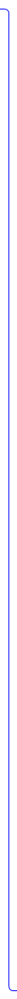
4）路口关系维护：
如果原始link为路口内组成link，分割link新生成的NODE应加入路口子点中，如果此路口的信号灯字段为“无路口红绿灯”或“有行人红绿灯”，则不影响信号灯记录；如果此路口的信号灯字段为“有路口红绿灯”，则程序自动维护信号灯记录，具体维护原则见“修改道路路口节点”中“增加节点导致增加组成link”部分对信号灯的维护；（删除）
5）关系信息维护：
a) 以原始的LINK1作为进入线、退出线的车信、交限、分歧、分岔口提示、顺行、语音引导、收费站、大门的信息：如果是以NODE1为进入点，则由新LINK2继承。如果是以NODE2为进入点，则由新LINK3继承。
b) 以原始的LINK1作为进入线或者退出线的坡度、限速、交通信号灯、警示信息、减速带、电子眼的信息：如果是以NODE1为进入点或退出点，则由新LINK2继承。如果是以NODE2为进入点或退出点，则由新LINK3继承。
c) 以原始的LINK1作为经过线的车信、交限、分歧、顺行、语音引导信息，由LINK2和LINK3代替，并维护经过线组中的LINK_PID和LINK序号。
d) 以原始的LINK1作为参与线的人行过道信息：如果是NODE1挂接，则由新LINK2继承。如果是NODE2挂接，则由新LINK3继承。
e) 以原始的LINK1作为所在LINK的标牌信息：如果形状点在NODE1和NODE3之间，则由新LINK2继承，并需要更新形状点序号。如果形状点在NODE2和NODE3之间，则由新LINK3继承，并需要更新形状点序号。
f) 以原始的LINK1作为参与线的立交信息：如果形状点在NODE1和NODE3之间，则由新LINK2继承，并需要更新形状点序号。如果形状点在NODE2和NODE3之间，则由新LINK3继承，并需要更新形状点序号。
g) 对坡度的维护：
Link被打断后，将与坡度点挂接的Link作为坡度退出link，其他的Link均按照挂接关系顺序作为坡度的接续Link
h) 可变限速的维护同坡度；
操作说明：
1、点击Link，拖动到合适的位置，如果需要多次重复此操作；
2、点击操作的同时，在点击处添加一个形状点，结束拖动后系统对比显示拖动前后的Link
3、按空格键完成操作
4、系统记录下Link的最新的几何形状，并高亮显示
取消动作：
1、按Esc撤销上次移动的操作
2、点击其他编辑按钮，切换至对应编辑动作
业务说明：
1、 移动Link上某形状点的过程中,如果形状点过进,会直接擦除其相邻的形状点；
2、选择某个形状点拖动时，不允许擦除与其不相邻的本Link上的其他形状点
3、修形后的Link，部分形状在本图框外，则要在图框线处打断
4、关联维护如下：
a) 同一关系维护：如果此RDLink为主要素，则与当前Link具有同一线的Link也做相应操作；
b) 引导关系：与之有引导关系的POI、点门牌、地名索引、Zone或Town代表点上相关字段做出响应，引导LinkID不变、引导坐标重新计算，side值保留不变；
c) 所属关系维护：
原所属Link为当前Link的点门牌的所属Link，将保持不变；
点限速维护原则：关联link保持不变，同时将点限速显示坐标移动到关联link上离原点位最近的位置；
电子眼维护原则：关联link保持不变，同时将电子眼显示坐标移动到关联link上离原点位最近的位置；
d) 关联关系维护：原关联Link为当前Link的出入口索引、收费站索引的关联Link，将保持不变；
e) 立交关系：立交形状点，有立交不允许删除,和修行操作；其他形状点增删时，要同步维护立交关系内的形状点序号；
f) 既有立交关系又有同一关系的维护：立交形状点，有立交不允许删除,移动,修行操作；其他形状点增删时，要同步维护立交关系内的形状点序号，与之有同一关系的非道路link也随之删除，移动，修形；
g) 各类线线、线点、点线、复杂关系不变；
h) 对邮编索引的维护：side值重新计算；
j) 当平滑修行，道路LINK形状改变时，程序将不维护与道路LINK相关联的行政区划的位置关系
实时控制：
1、 PERMIT_CHECK_NODE_IS_NOT_CONTAIN_SHAPENODE：一根link上不能存在坐标相同的形状点。注：link首尾相连的情况除外,且只检查某一形状点的后面两个形状点（前台）
2、 CHECK_ELECTRONICEYE_MESH_BORDER：点限速点位不能在图框线上（后检查）
3、 CHECK_RDSPEEDLIMIT_MESH_BORDER：电子眼点位不能在图框线上
4、PERMIT_CHECK_LINK_IS_NOT_MOVE_TO_CORNER_NODE：不允许移动形状点到角点处（前台）
5、重新编号：相邻形状点不可过近，不能小于2m（前台）
6、PERMIT_ERASE_GSC_NODE：不允许去除或修改有立交关系的形状点（后台）
7、GLM01026：除起终点，Link的形状点不能在图廓上（？？）
8、GLM01027：Link的形状点数应小于490（前台）
9、GLM56004：修形中产生自相交，要提示立交或打断（？？）
业务说明：
1、当移动端点时：
① 开启点捕捉，将一个link的节点形状点移动到另一个link的节点处，将这两个节点进行合并，同点位处只有一个node；
② 未开启点捕捉，将一个link的节点形状点移动到另一个link的节点处，这两个节点未进行合并，同点位处有两个node；
2、合并NODE的维护：
a) 与ADAS的关联关系维护：link的关联关系解除，如果此RDlink上挂接的NODE有且仅挂接一个link，则NODE的关联关系也解除，如果此RDlink上挂接的NODE挂接了两根及两根以上的link，则NODE的关联关系保留
b) 对线-点关系（警示信息、信号灯、减速带）的维护：
如果平滑修形导致合并NODE，那么被删除的NODE如果制作了警示信息、信号灯、减速带关系信息，则此关系信息应该相应删除；
c)对highway-NBT的维护：合并NODE到高速节点的进入点处，高速节点关系保持不变
d)对highway-13CY的维护：同分离节点的维护原则;
3、关联维护：
被移动要素上的各种关系按照平滑修行业务说明进行维护；
被打断LINK各要素上的各种关系按照打断LINK的逻辑进行维护
实时控制：
1、 PERMIT_CHECK_NODE_IS_NOT_CONTAIN_SHAPENODE：一根link上不能存在坐标相同的形状点。注：link首尾相连的情况除外,且只检查某一形状点的后面两个形状点（前台）
2、 CHECK_ELECTRONICEYE_MESH_BORDER：点限速点位不能在图框线上
3、 CHECK_RDSPEEDLIMIT_MESH_BORDER：电子眼点位不能在图框线上
4、PERMIT_CHECK_LINK_IS_NOT_MOVE_TO_CORNER_NODE：不允许移动形状点到角点处（前台）
5、重新编号：相邻形状点不可过近，不能小于2m（前台）
6、PERMIT_ERASE_GSC_NODE：不允许去除有立交关系的形状点
7、PERMIT_CHECK_GSCNODE_NOT_MOVE：创建或修改link，节点不能到已有的立交点处，请先删除立交关系
8、 PERMIT_CHECK_NOT_MOVE_LINK_SNAP_NODE：该link的端点已经作为了同一点，不能再用该端点进行合并点操作
9、PERMIT_MODIFICATE_CROSSINNER_POINT：对组成路口的node挂接的link线进行编辑操作时，不能分离组成路口的node点；（后台）
10、PERMIT_MODIFICATE_LINELINE_NODE：该线是经过线，移动该线造成线线关系（车信、线线交限、线线语音引导、线线分歧、线线顺行）从inLink到outlink的不连续（后台 ）
11、PERMIT_CHECK_LINK_IS_SNAP_CLOSED_TO_NODE：不能打断过短的link（？？）
12、PERMIT_CHECK_LINK_NODE_CRFI：如果link上的node已经参与制作了CRFI，则不允许对此node进行修形操作
13、PERMITMOVESHEETCORNERRULES：该点是图廓点，只能在图廓线上（后检查）
14、GLM01031：道路link长度应大于2米（后台）
15、GLM56004：修形中产生自相交，要提示立交或打断（？？？）
16、重新编号：该Node点已经被做成同一点，不能再移动该Node点
11）与ADAS的关联关系维护：
link的关联关系解除， ADASLINK在相应比例，距离最近形状点处（计算RDLINK上NODE3到起点的直线距离和RDLINK起终点连线的比例=ADASLINK上断点到起点的实际距离和起终点实际距离的比例，）打断生成新的ADASLINK.重新维护生成的ADASlink的属性（删除原ADASLINK_pid重新给新的ADASLINK赋值，其他业务原则详见ADASLINK打断的业务规则2、3、4检查规则1、2、3、4），原起终点NODE的关联保留，断开点的NODE重新建立关联关系；
12） 限高限重信息维护：
继承原link1上的限高限重信息
13） 对highway-13CY的维护：
① Route、位置信息中的组成link如果被打断，原Route、位置信息的维护原则为：保留与Route、位置信息中的Node挂接的link；
② 如果设施JCT中的关联线被打断，那么，如果此关联线只挂接起始设施中的route，则只保留与起始设施直接挂接的link；如果此关联线同时挂接了起始设施和终止设施中的route，则则只保留与起始设施直接挂接的link。
14）对highway-NBT的维护：
① 高速节点的进入link被打断，则将打断后与高速节点组成NODE挂接的link维护为进入link；高速节点的退出link被打断，则将打断后与高速节点组成NODE挂接的link维护为退出link；对JCT连接点经过线的维护：
② JCT连接点的经过线link1被打断生成link2和link3，打断后新生成的link2和link3应作为JCT连接点的经过线；
15） 对邮编索引的维护：
新生成的link距离邮编索引显示坐标最近的为引导link，同时维护side；
16) CLM信息维护；
1、原始link1上有详细车道信息，打断后新生成的link2和link3上继承原link1的详细车道信息；
2、详细车道经过线被打断，新生成N条新link，对应维护N个详细车道经过LANE表RD_LANE_TOPO_VIA：
① 连通号码.TOPO_ID、LANE组号.GROUP_ID继承原经过线的值；
② LANE序号.SEQ_NUM按LINK的通行（从进入线、经过线、退出线依次挂接的方向）挂接顺序进行重新编号；
③ LANE号码.LANE_PID取原经过线车道对应车道序号SEQ_NUM上的LANE号码.LANE_PID；对于未变更的经过线LANE继承原有的LANE_PID；
④ 经过LINK.VIA_LINK_PID按新生成的LINK的通行（从进入线、经过线、退出线依次挂接的方向）方向排序重新赋值；对于未变更的经过线LANE继承原有的VIA_LINK_PID；
⑤ 其他字段付默认值。
3、link打断场景对CLM的信息维护变更，如果link上存在有详细车道信息，且link上车道中转向箭头（RD_LANE表ARROW_DIR 字段）不为o空或者9未调查时，按以下原则进行维护：
①如果link被打断后，生成新Link（LinkA、LinkB）,新Link都不挂接路口（路口:node点挂接的link大于2条的是路口，且路口位置在原link的两个端点位置），那么两根新link的转向箭头信息均为9未调查
②如果link被打断后，生成两根新Link（LinkA、LinkB），仅LinkA的一端挂接了的路口（路口:node点挂接的link大于2条link的是路口，且路口位置在原link的两个端点位置）时，按以下原则处理：
A:如果路口在原link画线方向的起点：
当原有Link的车道方向LANE_DIR=2顺方向时，LinkA、LinkB的转向箭头信息为9未调查；
当原有Link的车道方向LANE_DIR=3逆方向时，LinkA的转向箭头信息保留，LinkB的转向箭头信息为9未调查；
当原有Link的车道方向LANE_DIR=1无时，按以下原则处理：
a当原有Link的道路方向DIRECT=2顺方向时，LinkA、LinkB的转向箭头信息为9未调查；
b当原有Link的道路方向DIRECT=3逆方向时，LinkA的转向箭头信息保留， LinkB的转向箭头信息为9未调查；
c当原有Link的道路方向DIRECT=0未调查或者1双方向时，新生成两根新Link的转向箭头信息都保留。
B：如果路口在原来Link画线方向的终点：
当原有Link的车道方向LANE_DIR=2顺方向时，LinkA的转向箭头信息保留，LinkB的转向箭头信息为9未调查；
当原有Link的车道方向LANE_DIR=3逆方向时，LinkA、LinkB的转向箭头信息为9未调查；
当原有Link的车道方向LANE_DIR=1无时，按以下原则处理：
a当原有Link的道路方向DIRECT=2顺方向时，LinkA的转向箭头信息保留，LinkB的转向箭头信息为9未调查；
b当原有Link的道路方向DIRECT=3逆方向时，LinkA、LinkB的转向箭头信息为9未调查；
c当原有Link的道路方向DIRECT=0未调查或者1双方向时，新生成两根新Link的转向箭头信息都保留。
③如果link被打断后，生成两根新Link（LinkA、LinkB），LinkA的起点挂接路口、LinkB的终点挂接路口（路口:node点挂接的link大于2条的是路口，且路口位置在原link的两个端点位置）时，按以下原则处理：
当原有Link的车道方向LANE_DIR=2顺方向时，LinkA的转向箭头信息为9未调查，LinkB的转向箭头信息保留；
当原有Link的车道方向LANE_DIR=3逆方向时，LinkA的转向箭头信息保留，LinkB的转向箭头信息为9未调查；
当原有Link的车道方向LANE_DIR=1无时，按以下原则处理：
A当原有Link的道路方向DIRECT=2顺方向时，LinkA的转向箭头信息为9未调查，LinkB的转向箭头信息保留；
B当原有Link的道路方向DIRECT=3逆方向时，LinkA的转向箭头信息保留，LinkB的转向箭头信息为9未调查；
C当原有Link的道路方向DIRECT=0未调查或者1双方向时，新生成两根Link的转向箭头信息都保留。
④如果link被打断后，生成两个以上的新Link（LinkA……LinkB）,linkA、linkB按上述原则判断，两根link中间的其他link转向箭头信息为9未调查。